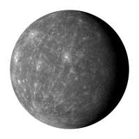

-

Mercury
Mercury is the closest planet to the Sun and due to its proximity it is not easily seen except during twilight.
-
Venus
Venus is the second planet from the Sun and is the second brightest object in the night sky after the Moon.
-
Earth
Earth is the third planet from the Sun and is the largest of the terrestrial planets.
-
Mars
Mars is the fourth planet from the Sun and is the second smallest planet in the solar system.
-
Jupiter
The planet Jupiter is the fifth planet out from the Sun, and is two and a half times more massive than all the other planets in the solar system combined.
-
Saturn
Saturn is the sixth planet from the Sun and the most distant that can be seen with the naked eye.
Facts about Mercury
QUICK MERCURY FACTS

- Mercury does not have any moons or rings.
- Your weight on Mercury would be 38% of your weight on Earth.
- A day on the surface of Mercury lasts 176 Earth days.
- A year on Mercury takes 88 Earth days.
- Mercury has a diameter of 4,879 km, making it the smallest planet.
- MIt’s not known who discovered Mercury.
DETAILED MERCURY FACTS
One solar day (the time from noon to noon on the planet’s surface) on Mercury lasts the equivalent of 176 Earth days while the sidereal day (the time for 1 rotation in relation to a fixed point) lasts 59 Earth days. Mercury is nearly tidally locked to the Sun and over time this has slowed the rotation of the planet to almost match its orbit around the Sun. Mercury also has the highest orbital eccentricity of all the planets with its distance from the Sun ranging from 46 to 70 million km.
One of five planets visible with the naked eye a, Mercury is just 4,879 Kilometres across its equator, compared with 12,742 Kilometres for the Earth.
Even though the planet is small, Mercury is very dense. Each cubic centimetre has a density of 5.4 grams, with only the Earth having a higher density. This is largely due to Mercury being composed mainly of heavy metals and rock.
As the iron core of the planet cooled and contracted, the surface of the planet became wrinkled. Scientist have named these wrinkles, Lobate Scarps. These Scarps can be up to a mile high and hundreds of miles long.
Facts About Venus
QUICK VENUS FACTS

- Venus does not have any moons or rings.
- Venus is nearly as big as the Earth with a diameter of 12,104 km.
- Venus is thought to be made up of a central iron core, rocky mantle and silicate crust.
- A day on the surface of Venus (solar day) would appear to take 117 Earth days.
- A year on Venus takes 225 Earth days.
- The surface temperature on Venus can reach 471 °C.
DETAILED VENUS FACTS
It takes 243 Earth days to rotate once on its axis (sidereal day). The planet’s orbit around the Sun takes 225 Earth days, compared to the Earth’s 365. A day on the surface of Venus (solar day) takes 117 Earth days.
This means that Venus is rotating in the opposite direction to the Sun, this is also know as a retrograde rotation. A possible reason might be a collision in the past with an asteroid or other object that caused the planet to alter its rotational path. It also differs from most other planets in our solar system by having no natural satellites.
Only the Moon is brighter. With a magnitude of between -3.8 to -4.6 Venus is so bright it can be seen during daytime on a clear day.
While its size and mass are similar to Earth, the small asteroids are crushed when entering its atmosphere, meaning no small craters lie on the surface of the planet. The pressure felt by a human on the surface would be equivalent to that experienced deep beneath the sea on Earth.
Facts About Earth
QUICK EARTH FACTS

- The Earth’s rotation is gradually slowing.
- The Earth was once believed to be the centre of the universe.
- Earth has a powerful magnetic field.
- There is only one natural satellite of the planet Earth.
- Earth is the only planet not named after a god.
- The Earth is the densest planet in the Solar System.
DETAILED VENUS FACTS
This deceleration is happening almost imperceptibly, at approximately 17 milliseconds per hundred years, although the rate at which it occurs is not perfectly uniform. This has the effect of lengthening our days, but it happens so slowly that it could be as much as 140 million years before the length of a day will have increased to 25 hours.
Due to the apparent movements of the Sun and planets in relation to their viewpoint, ancient scientists insisted that the Earth remained static, whilst other celestial bodies travelled in circular orbits around it. Eventually, the view that the Sun was at the centre of the universe was postulated by Copernicus, though this is also not the case.
This phenomenon is caused by the nickel-iron core of the planet, coupled with its rapid rotation. This field protects the Earth from the effects of solar wind.
As a percentage of the size of the body it orbits, the Moon is the largest satellite of any planet in our solar system. In real terms, however, it is only the fifth largest natural satellite.
Facts About Mars
QUICK MARS FACTS

- Mars and Earth have approximately the same landmass.
- Mars is home to the tallest mountain in the solar system.
- Only 18 missions to Mars have been successful.
- Mars has the largest dust storms in the solar system.
- On Mars the Sun appears about half the size as it does on Earth.
- Pieces of Mars have fallen to Earth.
DETAILED MARS FACTS
Even though Mars has only 15% of the Earth’s volume and just over 10% of the Earth’s mass, around two thirds of the Earth’s surface is covered in water. Martian surface gravity is only 37% of the Earth’s (meaning you could leap nearly three times higher on Mars).
Olympus Mons, a shield volcano, is 21km high and 600km in diameter. Despite having formed over billions of years, evidence from volcanic lava flows is so recent many scientists believe it could still be active.
They can last for months and cover the entire planet. The seasons are extreme because its elliptical (oval-shaped) orbital path around the Sun is more elongated than most other planets in the solar system.
At the closest point to the Sun, the Martian southern hemisphere leans towards the Sun, causing a short, intensely hot summer, while the northern hemisphere endures a brief, cold winter: at its farthest point from the Sun, the Martian northern hemisphere leans towards the Sun, causing a long, mild summer, while the southern hemisphere endures a lengthy, cold winter.
Facts About Jupiter
QUICK JUPITER FACTS

- Jupiter is the fourth brightest object in the solar system.
- The ancient Babylonians were the first to record their sightings of Jupiter.
- Jupiter has the shortest day of all the planets.
- Jupiter orbits the Sun once every 11.8 Earth years.
- Jupiter has unique cloud features.
- The Great Red Spot is a huge storm on Jupiter.
DETAILED JUPITER FACTS
This was around the 7th or 8th century BC. Jupiter is named after the king of the Roman gods. To the Greeks, it represented Zeus, the god of thunder. The Mesopotamians saw Jupiter as the god Marduk and patron of the city of Babylon. Germanic tribes saw this planet as Donar, or Thor.
It turns on its axis once every 9 hours and 55 minutes. The rapid rotation flattens the planet slightly, giving it an oblate shape.
From our point of view on Earth, it appears to move slowly in the sky, taking months to move from one constellation to another.
The upper atmosphere of Jupiter is divided into cloud belts and zones. They are made primarily of ammonia crystals, sulfur, and mixtures of the two compounds.
Facts About Saturn
QUICK SATURN FACTS

- Saturn can be seen with the naked eye.
- Saturn was known to the ancients, including the Babylonians and Far Eastern observers.
- Saturn is the flattest planet..
- Saturn orbits the Sun once every 29.4 Earth years.
- Saturn’s upper atmosphere is divided into bands of clouds.
- Saturn has oval-shaped storms similar to Jupiter’s.
DETAILED SATURN FACTS
It exists in layers that get denser farther into the planet. Eventually, deep inside, the hydrogen becomes metallic. At the core lies a hot interior.
The Saturnian rings are made mostly of chunks of ice and small amounts of carbonaceous dust. The rings stretch out more than 120,700 km from the planet, but are are amazingly thin: only about 20 meters thick.
It is composed mostly of water ice and rock. Its frozen surface has lakes of liquid methane and landscapes covered with frozen nitrogen. Planetary scientists consider Titan to be a possible harbour for life, but not Earth-like life.
Pioneer 11, Voyager 1 and 2, and the Cassini-Huygens mission have all studied the planet. Cassini orbited Saturn from July 2004 until September 2017, sending back a wealth of data about the planet, its moons, and rings.